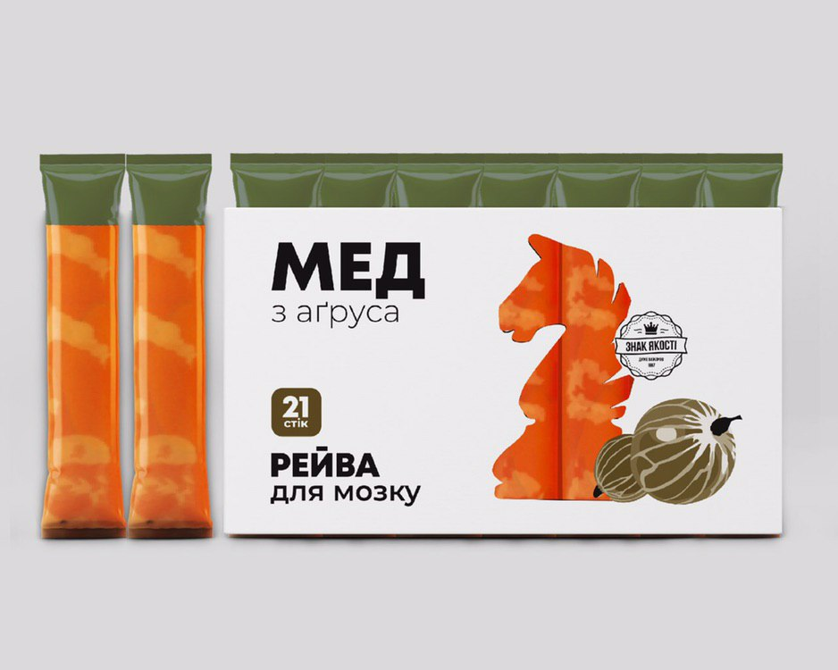
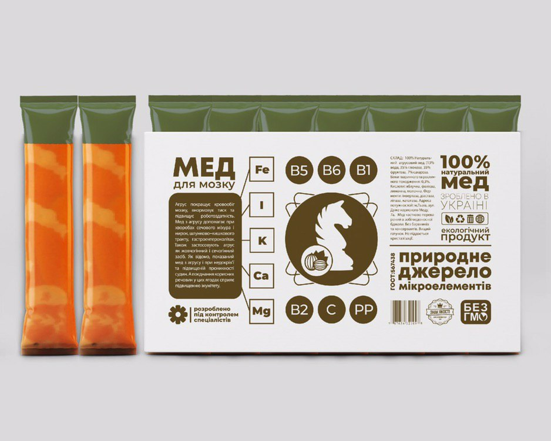
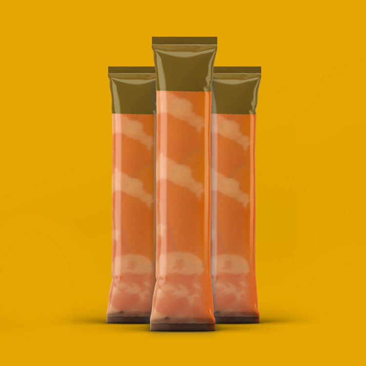

Мед з агрусу
45
Агрус покращує кровообіг мозку, внормовує тиск та підвищує роботоздатність. Мед з агрусу допомагає при хворобах сечового міхура і нирок, шлунково-кишкового тракту, гастроентероколіках. Також застосовують агрус як жовчогінний і сечогінний засіб. Як відомо, показаний мед з агрусу і при недокрів’ї та підвищеній проникності судин. А поєднання корисних ресовин у цих ягодах сприяє підвищенню імунітету
45